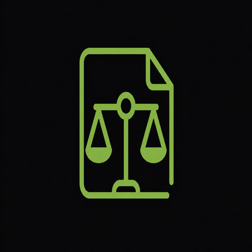

Applied AI lead
Applied AI
Leads live walkthroughs of document workflows, from intake to final markup, with emphasis on repeatable prompts and review checklists your team can adopt immediately.

Partner series — recorded briefing
Watch Claude Cowork tackle the legal work that eats up your week. We walk through how in-house teams and firms are using Cowork across contract review, drafting, and day-to-day document work — and we answer what it actually looks like to roll it out with your stakeholders.
Applied AI
Leads live walkthroughs of document workflows, from intake to final markup, with emphasis on repeatable prompts and review checklists your team can adopt immediately.
Legal
Frames risk boundaries for first-pass review, escalation triggers, and how to keep human judgment in the loop when Cowork proposes edits or extracts structured fields.
GTM
Covers procurement-friendly messaging, pilot design with measurable SLAs, and how to align legal operations, IT, and business sponsors on a phased rollout plan.
Opening — why “first pass” matters. Most teams lose hours on repetitive markup, clause hunts, and version reconciliation. We set a baseline for what “good enough for counsel review” means in practice.
Live document pass. We run a supplier agreement through redlines, pull out key commercial terms into a table, compare two drafts side by side, and draft a short client memo from notes.
Workflow placement. Cowork is positioned ahead of partner time: triage, consistency checks, and structured extraction. We show handoff patterns that preserve privilege-aware habits and clear escalation paths.
Q&A block. Bring questions on access controls, retention, model behavior, and how to document decisions for audit readiness.
Legal departments rarely need “more AI” in the abstract — they need predictable throughput on recurring work. Cowork is commonly used to produce a structured first review: flagging deviations from your playbook, suggesting alternative language that matches house style, and extracting dates, caps, and renewal mechanics into a summary your business partners can read without opening the PDF.
Firms often start with high-volume lanes — NDAs, vendor forms, and sales-side order papers — where speed and consistency beat bespoke prose. In-house teams frequently pair Cowork with a clause bank and a short set of non-negotiables, so the model’s suggestions stay inside boundaries your GC already approved.
The session also covers collaboration hygiene: naming conventions for prompts, version control for templates, and how to capture reviewer edits so the next matter benefits from what counsel already decided.
Confirm identity and access management fit, data residency expectations, logging available to your SIEM, and whether export controls apply to your matter types. We outline a practical checklist you can send to security engineering without legal jargon overload.
Use plain-language explanations of what enters the workspace, what is retained, and how human reviewers remain accountable for final advice. We share sample talking points for outside counsel guidelines and vendor questionnaires.
Start with one workflow, define success metrics (time to first review, error rate on extracted fields, percent of matters escalated), and expand only after playbooks are stable. We discuss training cadence and how to capture feedback from attorneys and paralegals.
This briefing is built for attorneys, legal operations leaders, knowledge management owners, and IT partners who need a concrete picture of AI-assisted document work — not a slide deck of promises. If your team is evaluating tooling for contract review and drafting, you will leave with a clearer sense of where automation helps, where it does not, and how to stage adoption responsibly.